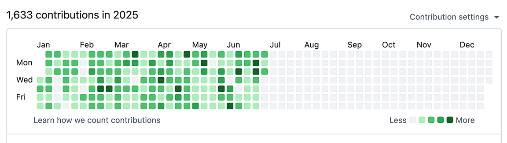

Projects
Screenshot on July 1, 2025
Personal Projects
As mentioned in About Me, coding is one of my passions. I often create small personal projects to learn, experiment, and achieve personal growth. Below are some of my projects, including web development, iOS and desktop applications, command-line tools, and CDK-based solutions.
DSVPlay Scraper
- Time: Mar. 2025 - Present
- Skills: Web Development, JavaScript
- Links: Chrome Web Store, GitHub
A handy chrome extension for downloading lecture recording videos from play.dsv.su.se.
Paths Police
- Time: Mar. 2025 - Present
- Skills: Python (Programming Language), Swift (Programming Language)
- Links: App Store, GitHub
A macOS App for checking unsupported file names.
Jupyrender
- Time: Feb. 2025 - Present
- Skills: Python (Programming Language), Jupyter
A Python-based tool for rendering Jupyter notebooks in read-only mode.
Hydrangea Athena Scraper
- Time: Nov. 2024 - Present
- Skills: Python (Programming Language)
- Links: GitHub
A tool for downloading files from Athena.
Hydrangea Screen Monitor
- Time: Oct. 2024 - Present
- Links: GitHub
A homebrew package for safely monitoring remote terminals.
VolumeVibe
An iOS app for precise volume control, as well as quiet mode with just one click. Adjust iPhone and iPad volume precisely.
Academic Projects
In addition to personal projects, I have participated in several academic projects as part of my university coursework and research. These projects often involved collaboration, problem-solving, and applying theoretical knowledge to practical challenges. They span areas such as data science, statistics, machine learning, and systems development.
Researches on CcGAN
- Time: Feb. 2025 - Present
- Skills: Python (Programming Language), Jupyter, Amazon Web Services (AWS)
CcGAN (Conditional Controllable Generative Adversarial Network) is a variant of the traditional Conditional GAN (cGAN) that is specifically designed to handle continuous labels and to provide more precise control over the generation process based on these continuous conditions.
Backpropagation in Chaotic Neural Networks
- Time: Feb. 2024 - Jun. 2024
- Skills: Python (Programming Language), Docker, LaTeX, Mathematics
Investigated the application of backpropagation in chaotic neural networks, and analyzed stability using Lyapunov exponents.
A Human-Computer Collaborative Tool for Training a Single Large Language Model Agent into a Network through Few Examples
- Time: Mar. 2023 - Jan. 2024
- Skills: React.js, Web Development
The capabilities of a single large language model (LLM) agent for solving a complex task are limited. Connecting multiple LLM agents to a network can effectively improve overall performance. However, building an LLM agent network (LAN) requires a substantial amount of time and effort. In this paper, we introduce EasyLAN, a human-computer collaborative tool that helps developers construct LANs. EasyLAN initially generates a LAN containing only one agent based on the description of the desired task. Subsequently, EasyLAN leverages a few training examples to update the LAN. For each example, EasyLAN models the gap between the output and the ground truth and identifies the causes of the errors. These errors are addressed through carefully designed strategies. Users can intervene in EasyLAN's workflow or directly modify the LAN. Eventually, the LAN evolves from a single agent to a network of LLM agents. The experimental results indicate that developers can rapidly construct LANs with good performance.